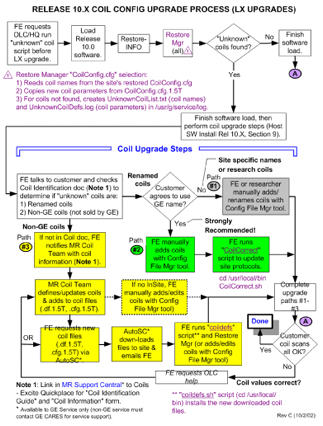
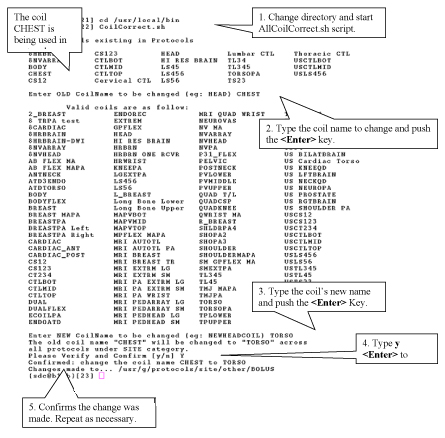

Operating Documentation
Direction 5133315-3, Rev# 14
Signa EXCITE HD 1.5T Service Methods
Module Version 1.0, Version Date 5/15/07
Operating Documentation |
This section should only be completed on systems updating from Signa 8.x or 9.x to 10.x or higher, and the system has reported unknown coils during restore manager update of CoilConfig.cfg. Beginning with Signa 10.0, the number of parameters used in coil configuration has grown significally. It is no longer a simple matter to configure new surface coils to Signa. As a result, a new process has been developed which auto configures known coils. The configuration is based off a known coil definition file that is keyed on known coil names
| NOTE: | You should do a Save Protocols before beginning the coils configuration process. This will allow for recovery in the event that something goes wrong in the coil update process |
There are two main reasons why a coil may not be part of the coil definition file:
Coils sold by GE that the customer has renamed from the GE standard name
Coils not sold by GE and or coils created by researchers
Once coils have been flagged by the system as being unknown coil(s) will have to be added to the system by one of three methods before it can be used
GE coils not using standard GE names that the customer does not agree to rename. These coils must be manually added/renamed using the Config File Manager tool. Non-GE or research coils are manually added using Config File Manager tool. All parameters will have to be updated manually.
GE coils that have been renamed are renamed back to their standard GE name. These coils must be manually added using the Config File Manager tool. A script is provided to update customer protocols if this step is used.
An update to the coil definition file is requested from GEMS HQ Coil Team. Once created the new file is downloaded and the coils are configured to the system using a script provided with 11.x software.
The first step to resolve unknown coil problem is to obtain the GE Coil Identification Document. This document may be found in the MR Service Methods CD ROM off the main system index. The latest copy can always be obtained by GE Employees by going to MR OLC Support Central on the GEMS Intranet and down load the document from under Manuals -> Coil Identification Document. This document can be used to help determine if unknown coils are renamed coils or non-GE (Not sold by GE) coils. Once the unknow coils are identified, refer to Illustration 1 for the coil update process and determine what action should be taken
Illustration 1: Release 11.X Coil Config Upgrade (LX Upgrades)

Sections 1 through 3 explain in detail the paths shown in Illustration 1.
This section covers path (1) on Illustration 1. To view all the coils that have been flagged as unknown, go to the Service Desktop and open a Cshell. Then type at the command prompt:
> more /usr/g/service/log/UnknownCoilList.txt<Enter>
Coils are manually added to the Signa system using Configuration File Manager. To start the Configuration file Manager go to the Service Desktop. If not already started, start the Service Browser, Choose the Configuration Tab and push the Configuration File Manager link on the left
Add the additional coils as needed. Refer to the Service document Configuration File Manager (Release MGD/10.x) section 3 for help in adding new coils
This section covers path (2) on Illustration 1. This sections also assumes that known GE coils have been renamed to non-GE standard names and the customer have agreed to use the standard GE names again. The coils that couldn't be found on the original update will have to be added manually using the correct names. After the coils are added, existing customer protocols that use the non standard name can be updated via script to the new coil name. Continue as follows.
To view all the coils that have been flagged as unknown, go to the Service Desktop and open a Cshell. Then type at the command prompt:
> more /usr/g/service/log/UnknownCoilList.txt<Enter>
Coils are manually added to the Signa system using Configuration File Manager. To start the Configuration File Manager go to the Service Desktop. If not already started, start the Service Browser, choose the Configuration Tab and push the Config File Manager link on the left
Add the additional coils as needed. From the “Available Coils” list, select the added coil(s) from the “Site Coils” list (added to bottom of list), then click [Edit Coil]. Change coil name back to the GE coil name
As an example, if the customer had a coil named “CHEST” that was using the GE TORSO coil, in Config File Manager add the CHEST coil back to the site and then edit and change the name to TORSO
| NOTE: | Once finished it may take a few minutes for the Coil Config to update to complete (refer to status line at the bottom of Config File Manager window) |
Refer to Service document Configuration File Manager (Release MGD/10.x) section 3 for help in adding new coils
Once a coil name has been changed, update the customer existing protocols by doing the following.
Open a Cshell and type the following command at the prompt:
> cd /usr/local/bin<Enter>> CoilCorrevt.sh<Enter> (If only one coil needs updating) or use> AllCoilCorrect.sh<Enter> This will allow walk through multiple coils)
In the command window will appear a list of coils that are currently used in the customer protocols. Enter the coil name you want to change. The next question will be what should the name be changed to. Give it the new name used in step 3 above, then a final verification is made and the script changes the coil name in the protocol
Using the example given above, changing the customer coil name “CHEST” back to the GE name “TORSO”. Illustration 2 shows the screen as seen on Signa. Step is an example screen. The number of coils shown for your system may vary
Illustration 2: Updating Customer Protocols With New Coil Names

Repeat step 4 above for all coils that may have renamed
This method is for sites without an InSite connection. The latest version CoilConfig.cfg file for Release 10.0 is available on the Coils-Excite Quickplace. From this site you can view or copy the file to get the latest coil values. You will then need to use the Config File Manager tool to manually edit the coil name
CoilConfig.cfg 1.5T.txt (viewable version of coil template file; not a Unix file)
You can access the “Coils-Excite” Quickplace as follows: The latest copy is available from Support Central - MR on the GEMS Intranet as follows: Manuals -> Signa Documentation -> Coils -10.X and above. Signa Infinity & Excite TEchnology -> Q.P. 9.0X and 10.X Coil Listing
Scroll to the bottom of the Quickplace screen and select the “CoilConfig.cfg.1.5T.txt” document
Copy the file to your PC, or open the file and view/record the values for the coil(s) you need. (This is a viewable only file. It is not a Unix file and cannot be transferred to Signa)
This method is used to change only those coils that need updating
From the service desktop Utilities menu, select the [Configuration File Manager] tool
Click on [Coil Config File]. From the “Site Coils” list, select the coil names that need to be updates then click [<<REMOVE<<]. (Example: If NVHEAD and NVARRAY coils need be updated due to coil faults, select NVHEAD and NVARRAY then click [<<REMOVE<<].
From the “Available Coils” list, select the same coil names as the last step (example: NVHEAD, NVARRAY), and then click [>>ADD>>].
When all coils to be updated have been removed and re-added, exit and save changes by clicking [Quit], [Yes], and then [Save] to save changes.
Reboot Signa for coil changes to take effect.
Perform a test scan with the changed coil(s).
This section explains how to manually add “unknow “ coils found by Restore Manager back into the site's Coil Config file so they are available for customer to use
Type the following in the command window:
> cd /usr/g/service/log<Enter>> more UnknownCoilList.txt<Enter> (Displays a list of “unknown” coils.) > more UnknownCoilDefs.log<Enter> (Displays the original coil parameters for each “unknown” coil.)
From the service desktop Utilities menu, select the [Configuration File Manager] tool
Click [Coil Config File], then click [Add new Coil]
The Add a new Coil screen displays coil value fields for a new coil. Either click on the fields or tab through the fields to enter values from the “UnknownCoilDefs.log”. (Use the <Delete> key to edit the text; the <Backspace> key works from the end of the field instead of where the cursor is located). Click [OK] to close the screen
Repeat step 4 above for additional “unknown” coils have been added, exit and save changes by clicking [Quit], [Yes], and then [Save] to save changes
Reboot Signa for coil changes to take effect